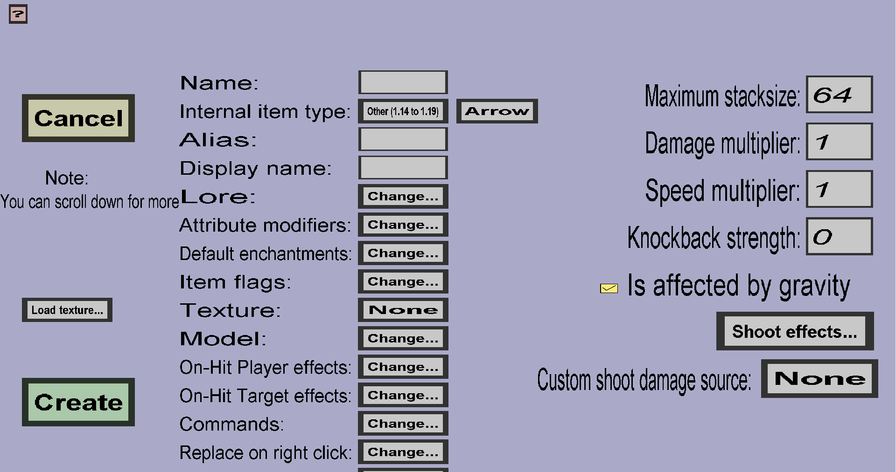

The arrow edit menu can be used to create custom arrows. Just like vanilla arrows, custom arrows can be fired from both custom (cross)bows and vanilla (cross)bows, but custom arrows have customizable damage, speed, and special effects. This menu should look like this:
All properties on the left of this page are explained here. The properties on the right of this page are unique to custom arrows and are explained below:
The maximum stacksize of this custom arrow in the player inventory.
How much damage this arrow will deal compared to vanilla arrows. When this is 1, this custom arrow deals the same damage as vanilla arrows. When this is 0.5, it only deals half of the damage. When this is 2, it deals twice the damage...
How fast this arrow is compared to vanilla arrows. When this is 1, the custom arrow will be equally fast as vanilla arrows. When this is 0.5, the custom arrow will be twice as slow as vanilla arrows. When this is 2, the custom arrow will be twice as fast as vanilla arrows. Note: the damage of an arrow will be larger when it hits the target at higher speed, so increasing the speed multiplier will implicitly also increase the damage.
How far this arrow will knock the target away. The knockback strength will basically be added to the punch enchantment level. For instance, if the arrow has knockback strength 1 and the bow has punch 1, the custom arrow will give the same knockback as a vanilla arrow fired from a bow with punch 2. If you give the custom arrow knockback strength 0, it will have the same knockback as a vanilla arrow. If you give it a negative knockback strength, it will reduce the effective punch enchantment level.
Whether this custom arrow is affected by gravity. If you uncheck this, the arrow will ignore gravity and thus fly in a straight line.
Shoot effects can be used to configure special effects that will happen when someone is struck by this custom arrow. Examples of special effects are knockback/knock-up, potion effects, and setting the target (or attacker) on fire. See this page for more information.
What kind of custom damage this arrow should deal when someone is shot using this arrow. By default, this is None, which means that the bow will determine which type of custom damage is used.